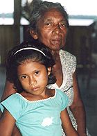

|  |  |  |  |  |
|
 |
 |
The Amazon - Whose Side Are You On? online composite story 2003 After the Mediamatic Interactive Storytelling classes in 2002, I went to the Amazon with two researchers, Gail Whiteman and Bill Flanigan. As they researched the effects of a bauxite mine on the local residents, I gathered material to make an interactive film about the possibly conflicting stories told by different sides. The result was this online story, which was presented at the Fringe Cafe during the 2003 Academy of Management conference in Seattle, Washington. |
|
Other composite storytelling works:
Why Wait For Fame? Tell Your Story Now! |